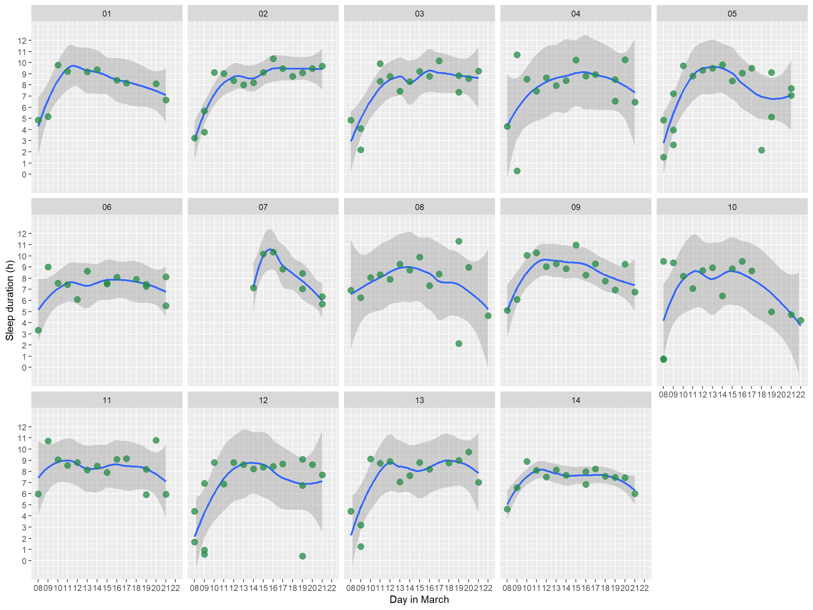
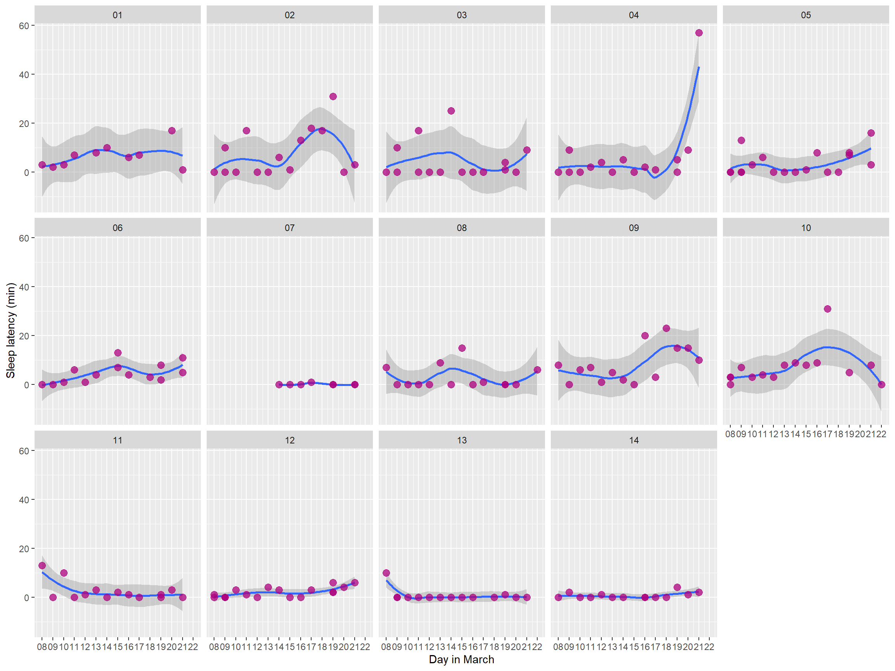
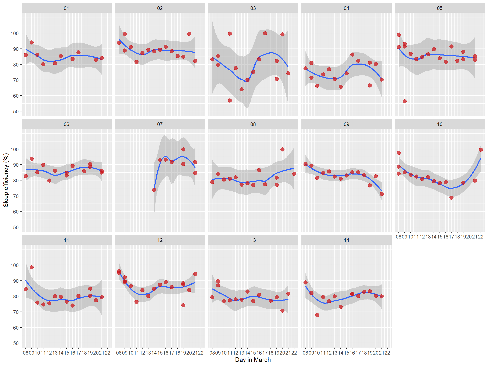
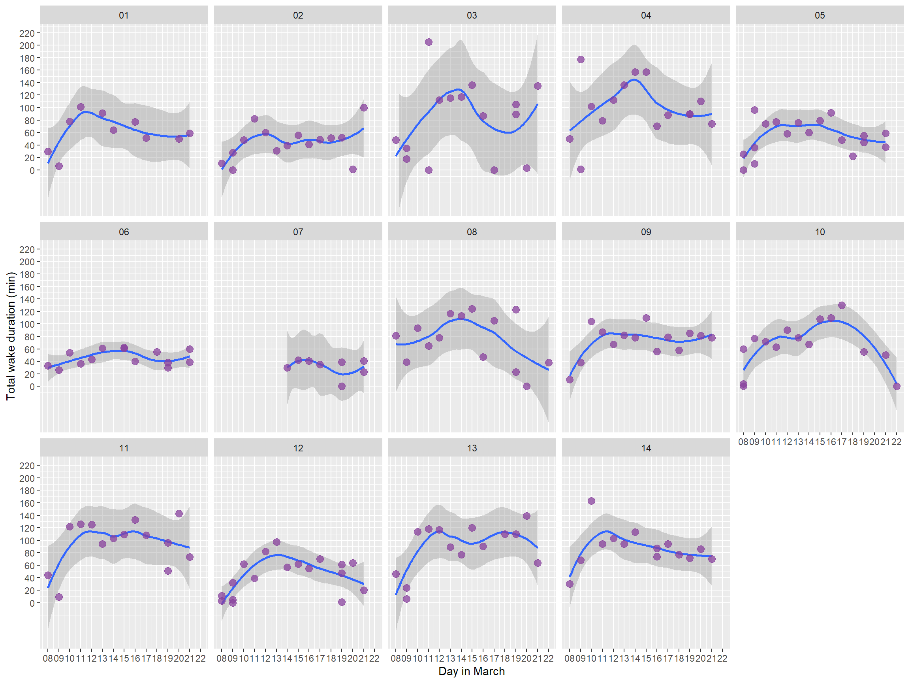
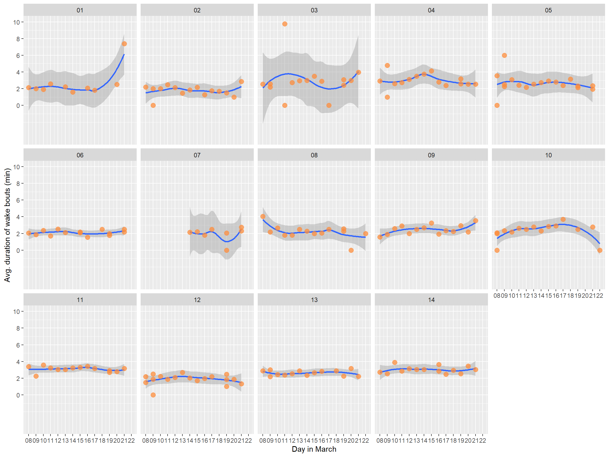

Chapter 7 Individual profiles
7.1 Per sleep bout
The plots below use data at the level of per player per sleep bout, throughout the whole tour period.
7.1.1 Sleep duration
## `geom_smooth()` using formula 'y ~ x'
7.1.2 Sleep latency
## `geom_smooth()` using formula 'y ~ x'
7.1.3 Sleep efficiency
## `geom_smooth()` using formula 'y ~ x'
7.1.4 Total duration of wake bouts
## `geom_smooth()` using formula 'y ~ x'
7.1.5 Number of wake bouts
## `geom_smooth()` using formula 'y ~ x'
7.1.6 Average duration of wake bouts
## `geom_smooth()` using formula 'y ~ x'
7.2 Per day
asdfasdf